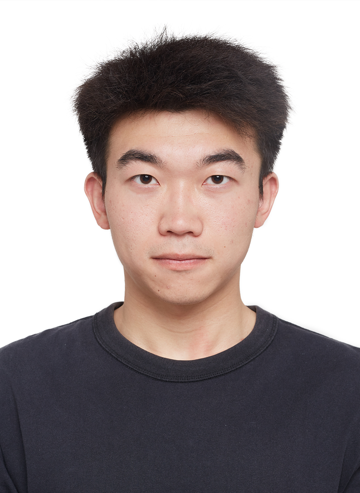

B.Eng. Artificial Intelligence · Southwestern University of Finance and Economics · Chengdu, China
I am an undergraduate researcher at Nice Lab, SWUFE, supervised by Dr. Wu Wang.
Dual-branch frequency-domain pansharpening network. The Global Branch applies a single learnable anisotropic Butterworth filter over the full feature map; the Local Branch uses Butterworth Token Interaction (BTI) for patch-level adaptive texture enhancement. All operations are element-wise on the FFT spectrum for O(N log N) complexity.
Full-stack AI tutoring platform built around a ReAct Agent that dynamically dispatches to 10+ domain-specific Skills and 16+ MCP tools including RAG retrieval, web search, and code execution. Hybrid RAG pipeline (dense + BM25 + cross-encoder re-ranking), LightGBM cold-start user profiling, and three-tier memory system. Multi-user isolation via Docker Compose.